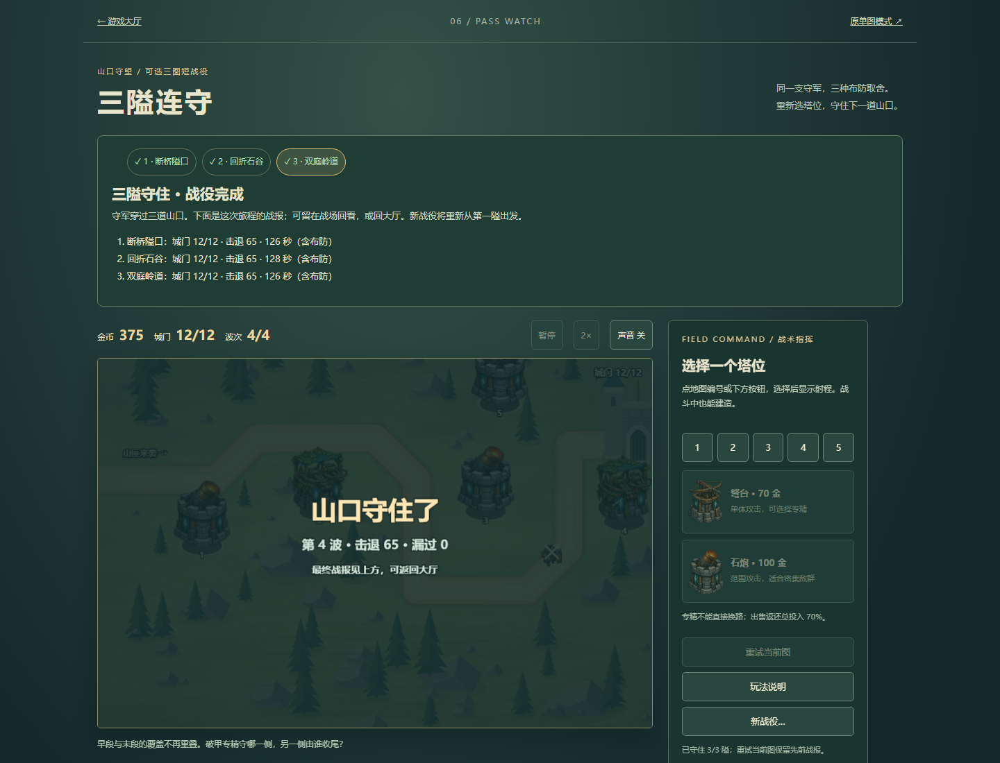
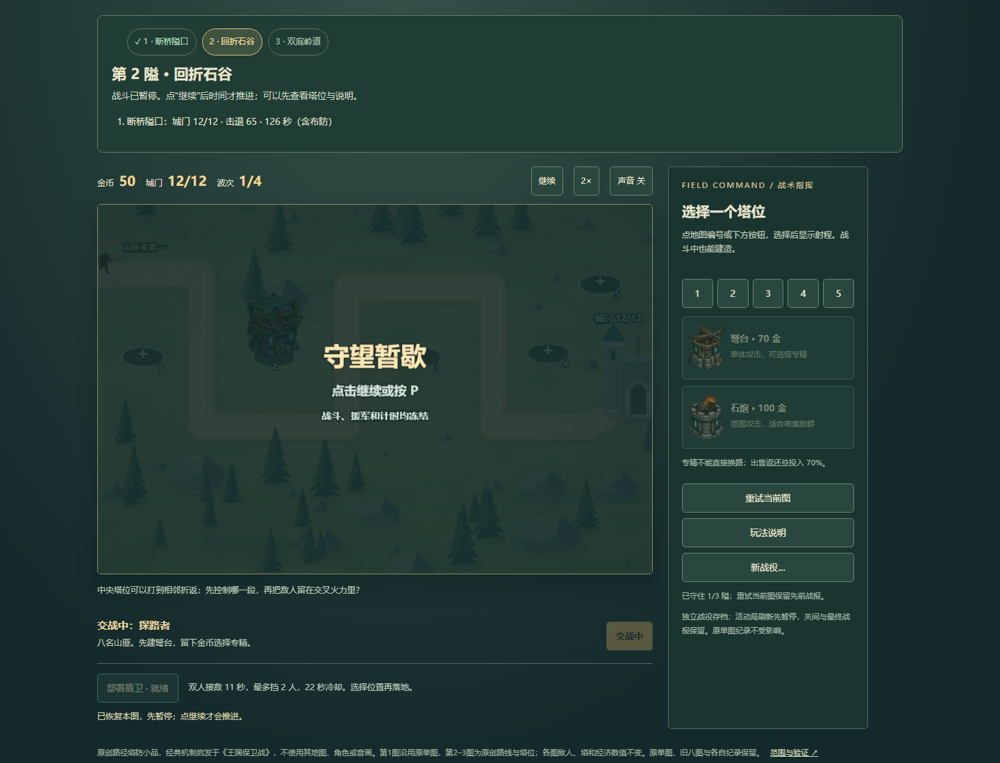
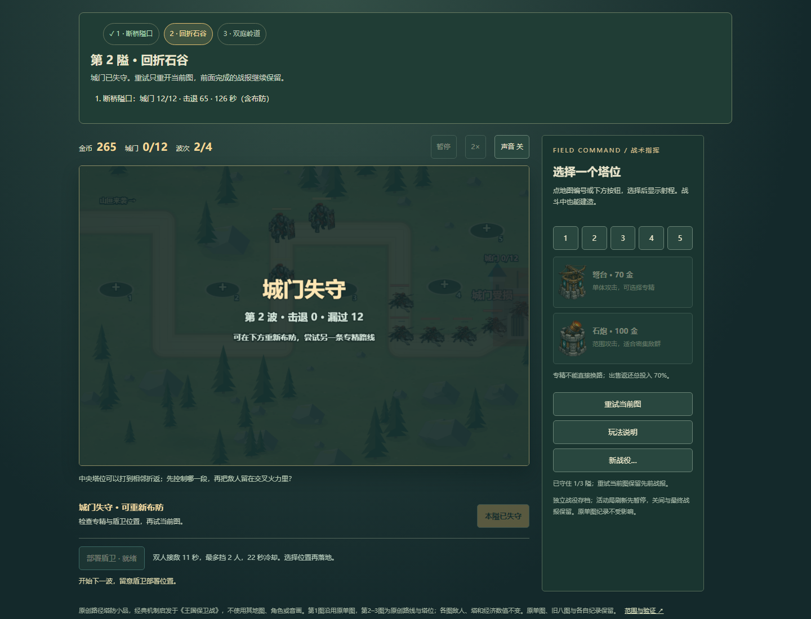
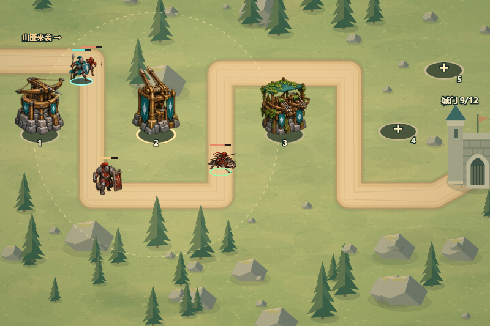
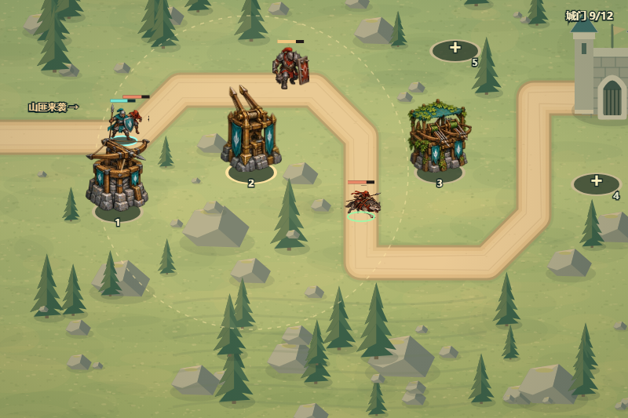
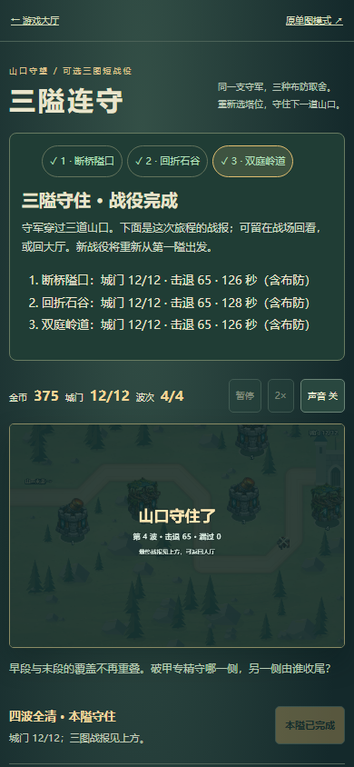
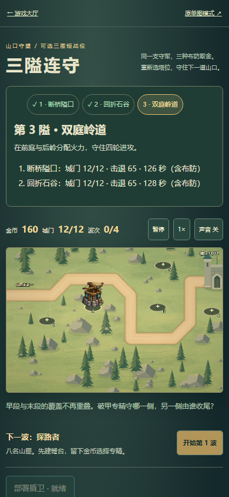

保留断桥隘口，新增回折石谷与双庭岭道。沿用原230金、12城门、四波及全部塔/敌人/盾卫数值，区别来自路线和五座塔位的覆盖。每图重新布防，前图战报保留；失败重试当前图、关间推进、最终总结和活动局刷新暂停完整接通。原单图和旧八图代码、纪录不变。
2026-10-22，本机预览、Chromium桌面1440×1100及390×844 CSS。只用原生按钮键盘、画布点击与第三图触控模拟，依据只读状态辅助安排，使用原有2×按钮；未注入时间、血量、钱、胜负或完成档。各图126.9/128.5/126.2为游戏内含布防用时，不是保证真人时长。
| 地图 | 实际UI结果 | 布局差异 |
|---|---|---|
| 断桥隘口 | 12/12，击退65，零漏 | 原路线/塔位 |
| 回折石谷 | 12/12，击退65，零漏 | 相邻折返、多段覆盖 |
| 双庭岭道 | 12/12，击退65，零漏 | 前庭/末段火力分配 |
第二图先不建塔自然失守（66.6游戏秒），刷新保留失败，重试恢复230金/12城门/空塔且保留第一图战报。活动局暂停后刷新逐字段一致；关间、完成态刷新保留。真实完成会话已保存，并用它核对新战役取消/确认，未用模型完成档替代。原单图记录未变化；目录入口→战役→大厅的搜索与键盘焦点保留。



预算合法、0.1秒一次普通命令决策：回折石谷重弩/缚索均12生命；双庭岭道重弩6生命（漏2只重甲），缚索12生命。新图使用2号专精→3号石炮→4号同专精→1/5号石炮，够钱才施工；盾卫按实际路径位置部署。两种机制有差异，但不是穷尽策略或严格平衡结论。


9组模型/存储测试，另有原图同命令逐秒/终态严格对照：原图缚索成功和重弩失败尝试均与v2一致。两新图双分支模型成功，未改原规则。独立战役键；旧有效档写失败不删除，后续成功清除警告；坏档保留原字节、禁止覆盖；读权限失败仍可内存游玩。配额/权限/坏档为明确的浏览器注入fixture，不代表实测设备故障。


代码原生新地形，沿用既有原创精灵与首图背景，无经典游戏资产。真实手机触感、多设备性能、声音听感、真人策略乐趣、长期平衡及审美仍未验收；不声称精品或官方复刻。本批不新增第43款，也未重跑原八图/全库通关。
原始证据：普通UI · 模型策略与预算命令 · 原图兼容 · 存储fixture · 目录短验 · 方法/边界 · 9组可重跑测试。部署是否完成以最终交付的SHA与Pages run为准，本页不把本机预览称为上线。